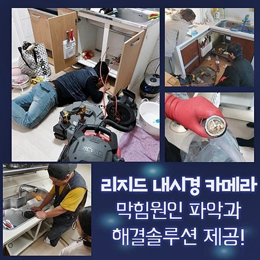
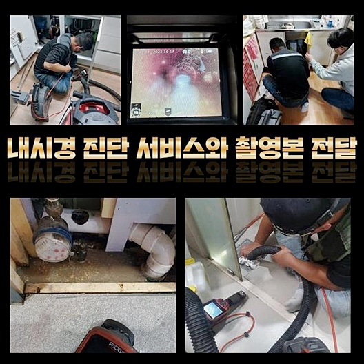
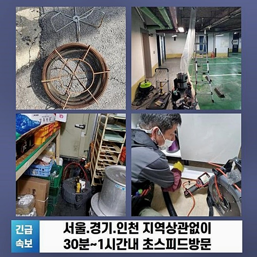
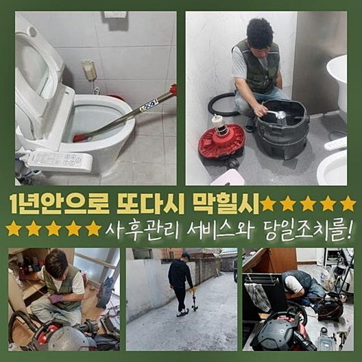
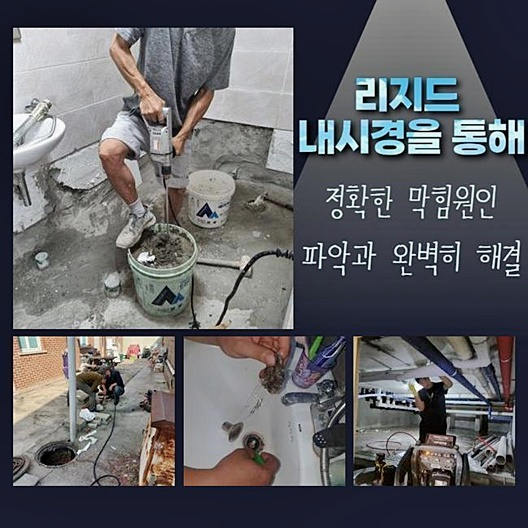
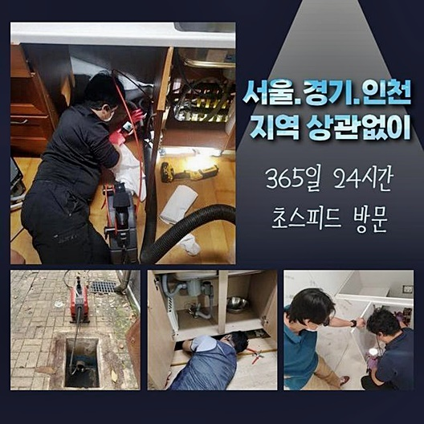
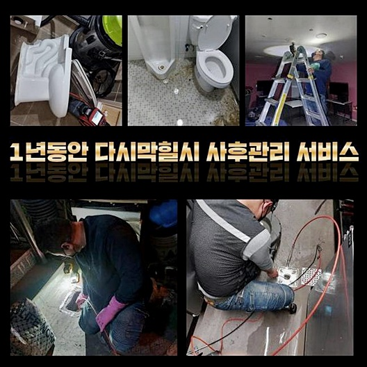

🏠 용산 원효로4가하수구뚫음 서빙고동 배관뚫기 수리업체
용인시 처인구 배관막힘 전문 시공 후기

📋 작업 개요
- 위치: 용인시 처인구, 수원시 영통구, 화성시 동탄
- 서비스 유형: 배관막힘, 누수수리, 배관수리, 고압세척, 내시경점검
- 작업 일시:
- 업체명: 하수구수사대 (010-5615-2118)
🔍 문제 상황
용산 원효로4가하수구뚫음 서빙고동 배관뚫기 수리업체
오늘 포스팅에서는 배수구가 막혀서 불편하셨던 의뢰인의 소식을 들려드릴게요
가정 집에서 배수구에 장애들이 생겨 고여있는 상태에 놓이게 된 의뢰인은 본인이 가지고 있는 물건들로 사태를 해결하려 해보았으나 도리어 사태를 악화되게 만들었죠
전문가가 막혀있는 배수관을 진단을 해보니 안쪽에 있는 하수관이 이물질로 가득차서 배수가 원만하게 되지 않은걸로 파악했습니다
이 일로 의뢰인의 집에는 누수는 없었는데요, 하수관에 이물질들을 수리하긴 힘든 상황인지라 베테랑의 작업 스킬이 필요한 순간이었죠
이른 아침에 전화를 하셔서 신속하게 현장에 방문해서 문의자와 상담을 나누었습니다
문제 해결을 위해 다양한 이야기들을 들었는데, 배수 불량이 가장 큰 문제였습니다
저희들은 구체적인 설명과 이유를 찾기 위해서 적극적으로 소식을 경청하였고 이 부분을 기초로 곤란을 해소하려고 힘쓰고 있습니다
그렇기 때문에 우리팀은 이런 사례들을 기초로 하여 꾸준히 발전해 나가고 있어요
무엇보다도 하수도 막힘 곤란을 해결할때는 사용되는 장비가 대단히 중요할 수 있습니다
저희들은 내시경기기와 석션장비로 알려져 있는 첨단 장비들을 소유하였기에 우수성을 확립 중 입니다
좋다는 세정제를 사용했는데도 물이 흘러가지 않아 고생하셨다 말씀하셨습니다
배수가 안되는 현장을 방문해서 조사해보니 현장에 위치한 하수관 일부분이 막힌것으로 판명되었습니다

🔎 원인 분석
💡 전문가 진단: 정밀 진단 장비를 사용하여 슬러지의 고착 여부를 판명하고 타격/세척 작업을 실시했습니다.
함께 이용하는 배관의 경우는 파이프가 굵고 상당히 넓은편이어서 이물질이 끼어있는 곳을 즉시 제거하기엔은 힘들었습니다
그 결과 강한압력으로 세척을 진행하여야 했습니다
강력한 수압으로 세척을 하고 나니 배수가 원활해졌고 큰 이슈도 나타나지 않았어요
연락주신 분의 빌라는 많은 가구들이 함께 이용하는 형태이므로 한 가정이 아닌 여러 세대에 같은 현상이 발견되는 경우가 빈번합니다
이 같은 상황에선 교차되는 곳에서 해결해야합니다
다수의 가정이 함께 쓰는 배수관은 일정기간마다 청소와 관리를 실시하는 것이 필요합니다
무엇보다 해당 매장이 입점한 건물에서는 피해를 본 인근 점포가 다수 있었습니다
인근 가게들은 수도를 이용할 수 없어서 점포를 운영하는데 지장이 생겼고 동일한 층에 있던 남자 화장실 역시 하수파이프가 막혀 사용불가한 상태였습니다
이 같은 문제는 가게 운영에 즉각적으로 피해를 주기 때문에 전문가의 해결이 필요합니다 배관이 막히는 이유는 빌딩의 설계 및 외부적 요인과 같은 여러가지 원인을 통해 발생하게 됩니다
그렇기 때문에 원인 파악시에는 많은 점을 확인해야 합니다
전문가들은 신속하게 배관 막힘의 원인들을 발견했습니다
빌딩의 지하 하수관이 이번 현장의 가장 큰 이유였습니다
그런데 하수관에서 확인하는 것이 힘들어서 초기에는 눈치채기 곤란했어요

🔧 작업 과정
배관 고압 청소 서비스를 실시하려고 기계를 준비했으나 찌꺼기들이 상당량 축적된 상태였습니다
그렇기 때문에 더 나은 방법의 조치들이 필요합니다
전문인는 고객님들의 문제상황을 돕기 위해 언제나 집중합니다
근래엔 근방의 막혀있는 하수구를 개선하기 위해 고압 물세척을 실행했습니다
오염물질을 성공적으로 내보내기위해 강력한 수압을 적용하여 하수관에 영향없이 깨끗하게 배수구 막힘을 해결했습니다
절차가 난해하여 까다로웠으나 숙련된 베테랑이라 정확하고 속도감있게 작업을 마쳤습니다
한 가정을 넘어서 다른집의 문제 또한 동시에 해결하여 많은 사람들의 충족을 이끌어낼 수 있었습니다
하수관에 알맞게 오수구를 깨끗히하고 깨끗한 상태를 보존하도록 모든 노력을 다하고 있습니다
여러분의 불편 해소를 위해 언제라도 빠르고 안전한 해결을 드립니다
하수도에 무언가가 발견되는경우 관통장비를 적용하여 이물질들을 미는 계획을 사용합니다
그러나 찾아가서 확인하니 배수가 안되고 분명하게는 역행하여 하수도 배관에 이상이 있을 소지가 상당한것으로 확인하였습니다
결국 비누등이 아니라 오수 파이프 자체에 이상이 발생한 것으로 추정되어서 이웃 집에서도 동일한 이슈가 발생하고 있는지 파악해 나가려고 관리팀과 함께 상세히 점검을 실행했습니다
결론적으로 많은 이웃집에서 하수관 물들이 매끄럽게 차오르는 이슈가 확인되어 메인 배수관을 따라서 확인해보니 현장에 있는 하수도 쪽에 장애가 나타난 것을 파악되었습니다
따라서 따라 주민분들께 세부사항을 설명해드리고 신속히 수리를 진행해 이슈를 해결할 수 있게 실행했습니다
배수 불량의 장애들이 해결되니 여러분의 불편을 감소시킬 수 있었습니다
고객에게도 이런 현상에 대해 설명드렸어요
의뢰인께서는 배관에서 배수 불량이 나타나게 된 것을 아예 상상도 못했다며 전하셨어요
해당 사례처럼 배수 장애시에는 전문가의 손길이 없으면 수리하기가 복잡합니다
일반 사람들은 문제 파악이 힘듭니다
하지만 우리팀은 여러경력을 보유한 전문기술자들로 팀을 만들어 어느 배관이든 말끔히 수리합니다
의뢰인 건물에 방문드린 전문 기사님도 많은 실무경험을 갖추고 있는 훈련된 기술자였어요


✅ 작업 완료
저희의 기술자들은 이런식으로 능숙한 전문인력으로 편성되어 있습니다
이로 인해서 상업 건축물도 수리를 자주하지만 다양한 거주지에서도 배수 곤란을 언제나 해결했습니다
배수가 안되는 상황에는 강한 청소약품이나 긴 철사등의 공구를 이용하여 막힌것을 해결하고자 하는 접근은 반대로 하수도관에 파손 가능성을 일으킬수 있으므로 신중함이 필요합니다
그렇기 때문에 물이 내려가지 않으면 신속하게 기술자를 불러서 이유를 알아내는게 필요하죠
저희 서비스는 의뢰자분의 불편사항을 신속하고 효과적으로 해결해드릴 것을 약속드리겠습니다
배수불량으로 인해 문제를 겪고 있다면 언제라도 저희 배관 수리팀에 질문해주시기 바랍니다




⚠️ 하수구 배관 막힘 예방 및 관리 가이드
- ✅ 머리카락, 비닐, 물티슈 등 물에 분해되지 않는 이물질은 절대 흘려보내지 마세요.
- ✅ 기름기 많은 식기는 설거지 전 키친타올로 먼저 기름때를 닦아내세요.
- ✅ 주기적으로 배수구에 뜨거운 물을 가득 부어주어 유지방 고착을 방지하세요.
- ✅ 작업 후 1년 이내 재발 시 무상 A/S 보증 서비스를 제공합니다.
💡 핵심 정리
- 확실한 장비 작업(내시경 점검 및 샤프트 스케일링)으로 원인을 뿌리 뽑습니다.
- 작업 후 1년 이내에 동일한 부위 재발 시 100% 무상 A/S 서비스를 보장합니다.
- 서울 · 경기 · 인천 전 지역에 24시간 언제든 긴급 출동할 수 있도록 항시 대기 중입니다.
❓ 자주 묻는 질문 (FAQ)
🚨 용인시 처인구 배관막힘 문제로 고민이신가요?
정확한 원인 진단과 확실한 시공으로 재발 없는 해결을 약속드립니다.
24시간 긴급 출동 | 서울 · 경기 · 인천 전지역 | 1년 내 재발 시 무상 A/S